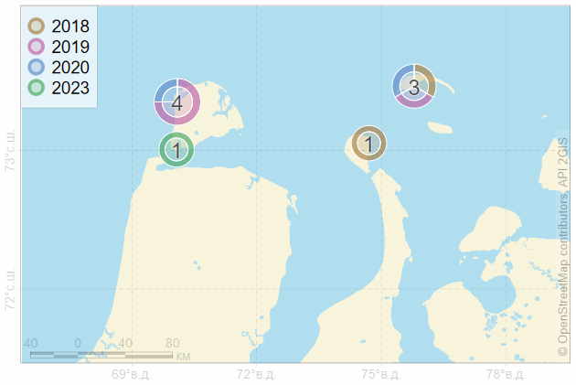

layout: true .toc.banner[ .sevinlogo[ ] .shorttitle[ ] ] --- name: home class: metadata customtitle middle left giphy .toc.sidebar.left-column[ .outline[ # [Программа...](#H89b83) # [Сбор данных ](#H0a3e5) # [Наземные учёты ](#He66ea) # [Авиаучёты ](#survey2018) # [Отловы ](#H0349e) # [Перемещения ](#Hee1e0) # [Питание ](#H64aaa) # [Генетика](#H6caef) # [Выводы ](#H67501) ] ] .toc.mainbar.right-column.scrollable[ .authors[ .author[Никита Платонов, Илья Мордвинцев, Евгений Иванов] .institute[ИПЭЭ РАН] .author[Андрей Умников] .institute[НП «Центр освоения Арктики»] ] .title[ Исследования белых медведей на севере Ямала ] .subtitle[ ] .what[ ] .where[ ] .when[ .updated[Обновлено: 2025-02-14 12:04] ] ] --- name: H89b83 .toc.sidebar.left-column[ .outline[ # [Программа...](#H89b83).fg[].bg[] # [Сбор данных ](#H0a3e5) # [Наземные учёты ](#He66ea) # [Авиаучёты ](#survey2018) # [Отловы ](#H0349e) # [Перемещения ](#Hee1e0) # [Питание ](#H64aaa) # [Генетика](#H6caef) # [Выводы ](#H67501) ] ] .toc.mainbar.right-column.scrollable[ .header.h1.show[ Программа изучения белого медведя в Российской Арктике ] .fixprecode[ Изучение, сохранение и восстановление популяции белого медведя в Российской Арктике + Пространственно-временное размещение + Перемещения белого медведя, использование местообитаний + Репродуктивная биология + Демографические характеристики + Питание: распределение и обилие кормовых ресурсов. + Человек – белым медведь + Влияние загрязняющих веществ, патогенных организмов и изменения климата + Структура географических популяций: молекулярно-генетический анализ. + Ледовые местообитания ] ] --- background-color: #330 name: H0a3e5 .toc.sidebar.left-column[ .outline[ # [Программа...](#H89b83) # [Сбор данных ](#H0a3e5).fg[].bg[] # [Наземные учёты ](#He66ea) # [Авиаучёты ](#survey2018) # [Отловы ](#H0349e) # [Перемещения ](#Hee1e0) # [Питание ](#H64aaa) # [Генетика](#H6caef) # [Выводы ](#H67501) ] ] .toc.mainbar.right-column.scrollable[ .header.h1.broad[ Сбор данных ] .fixprecode[ | | | |:----:|:--------------------------------------------------------------| | 2014 | стационарное базирование, о. Белый, **Малёв Александр Васильевич**, 16 июля - 24 августа | | 2015 | стационарное базирование, о. Белый, 17 августа - 31 августа | | 2016 | стационарное базирование, о. Белый, 23 августа - 06 сентября | | 2017 | авиаучёт, п-ов Ямал, 18 мая | | 2018 | [авиаучёт](#survey2018), припайный лёд Печорского и Карского морей, 15-20 мая, 27-29 мая | | 2018 | авиаучёт, отлов, п-ов Явай, о. Шокальского, о. Вилькицкого, 16 июля - 17 июля | | 2019 | авиаучёт, отлов, п-ов Ямал, п-ов Явай, о. Белый, о. Шокальского, о. Вилькицкого, 20 июля - 21 июля | | 2020 | «Хозяин Арктики», [авиаучёт](#survey2020), п-ов Ямал, о. Белый, 15 августа - 16 августа | | 2020 | авиаучёт, отлов, п-ов Ямал, п-ов Явай, о. Белый, о. Вилькицкого, 06 октября - 07 октября | | 2023 | [авиаучёт](#survey2023), отлов, п-ов Ямал, о. Белый, 06 сентября | | 2024 | [авиаучёт](#survey2024), п-ов Ямал, о. Белый, 08 ноября | ] ] --- name: He66ea .toc.sidebar.left-column[ .outline[ # [Программа...](#H89b83) # [Сбор данных ](#H0a3e5) # [Наземные учёты ](#He66ea).fg[].bg[] # [Авиаучёты ](#survey2018) # [Отловы ](#H0349e) # [Перемещения ](#Hee1e0) # [Питание ](#H64aaa) # [Генетика](#H6caef) # [Выводы ](#H67501) ] ] .toc.mainbar.right-column.scrollable[ .header.h1.broad[ Наземные учёты ] .fixprecode[ | | | |:----:|:--------------------------------------------------------------| | 2014 | о. Белый. 4 | | 2015 | о. Белый. 2. По опросам не менее 4 взрослых, включая самку с годовалым медвежонком | | 2016 | о. Белый. 4AM, 1AF+2C2. 1AU истощёный | | 2018 | о. Шокальского. 1AM, 1AF+2C2 | 2018 | о. Вилькицкого. 1AF+2C2, 1C2 | 2018 | о. Левдиев. 1AM | 2018 | о. Торасовей. 1AF+2CU ] ] --- name: survey2018 .toc.sidebar.left-column[ .outline[ # [Программа...](#H89b83) # [Сбор данных ](#H0a3e5) # [Наземные учёты ](#He66ea) # [Авиаучёты ](#survey2018).fg[] ## [2018](#survey2018).fg[].bg[] ## [2020](#survey2020) ## [2023](#survey2023) ## [2024](#survey2024) # [Отловы ](#H0349e) # [Перемещения ](#Hee1e0) # [Питание ](#H64aaa) # [Генетика](#H6caef) # [Выводы ](#H67501) ] ] .toc.mainbar.right-column.scrollable[ .header.h2.broad[ 2018 .parent[.grand[Авиаучёты]] ] .fixprecode[ ] ] --- name: survey2017 class: exclude exclude: true .toc.sidebar.left-column[ .outline[ # [Программа...](#H89b83) # [Сбор данных ](#H0a3e5) # [Наземные учёты ](#He66ea) # [Авиаучёты ](#survey2018).fg[] ## [2018](#survey2018).fg[].bg[] ## [2020](#survey2020) ## [2023](#survey2023) ## [2024](#survey2024) # [Отловы ](#H0349e) # [Перемещения ](#Hee1e0) # [Питание ](#H64aaa) # [Генетика](#H6caef) # [Выводы ](#H67501) ] ] .toc.mainbar.right-column.scrollable[ .header.h2.broad[ 2017 .parent[.grand[Авиаучёты]] ] .fixprecode[ + Следы одиночного медведя к северу от Сабетты + Моржи на льдинах в Байдарацкой губе ] ] --- name: survey2020 .toc.sidebar.left-column[ .outline[ # [Программа...](#H89b83) # [Сбор данных ](#H0a3e5) # [Наземные учёты ](#He66ea) # [Авиаучёты ](#survey2018).fg[] ## [2018](#survey2018) ## [2020](#survey2020).fg[].bg[] ## [2023](#survey2023) ## [2024](#survey2024) # [Отловы ](#H0349e) # [Перемещения ](#Hee1e0) # [Питание ](#H64aaa) # [Генетика](#H6caef) # [Выводы ](#H67501) ] ] .toc.mainbar.right-column.scrollable[ .header.h2.broad[ 2020 .parent[.grand[Авиаучёты]] ] .fixprecode[ .font90[ .pulling[ .pull-left-50[ Северное побережье п-ова Ямал: 3 особи + вблизи береговой линии ] .pull-right-50[ Побережье о-ва Белый: 21 особь + чаще всего в группах по двое + большинство на умеренном расстоянии от кромки воды + один плыл сторону п-ова Ямал от южного берега о-ва Белый ] ] ] ] ] --- name: survey2023 .toc.sidebar.left-column[ .outline[ # [Программа...](#H89b83) # [Сбор данных ](#H0a3e5) # [Наземные учёты ](#He66ea) # [Авиаучёты ](#survey2018).fg[] ## [2018](#survey2018) ## [2020](#survey2020) ## [2023](#survey2023).fg[].bg[] ## [2024](#survey2024) # [Отловы ](#H0349e) # [Перемещения ](#Hee1e0) # [Питание ](#H64aaa) # [Генетика](#H6caef) # [Выводы ](#H67501) ] ] .toc.mainbar.right-column.scrollable[ .header.h2.broad[ 2023 .parent[.grand[Авиаучёты]] ] .fixprecode[ + Высокая плотность на материке, у м. Головина + Один в тундре, комшарящий оленеводов ] ] --- name: survey2024 .toc.sidebar.left-column[ .outline[ # [Программа...](#H89b83) # [Сбор данных ](#H0a3e5) # [Наземные учёты ](#He66ea) # [Авиаучёты ](#survey2018).fg[] ## [2018](#survey2018) ## [2020](#survey2020) ## [2023](#survey2023) ## [2024](#survey2024).fg[].bg[] # [Отловы ](#H0349e) # [Перемещения ](#Hee1e0) # [Питание ](#H64aaa) # [Генетика](#H6caef) # [Выводы ](#H67501) ] ] .toc.mainbar.right-column.scrollable[ .header.h2.broad[ 2024 .parent[.grand[Авиаучёты]] ] .fixprecode[ Всего особей – 20, из них независимых – 19, зависимых – 1 (сеголеток). ] ] --- name: H0349e .toc.sidebar.left-column[ .outline[ # [Программа...](#H89b83) # [Сбор данных ](#H0a3e5) # [Наземные учёты ](#He66ea) # [Авиаучёты ](#survey2018) # [Отловы ](#H0349e).fg[].bg[] # [Перемещения ](#Hee1e0) # [Питание ](#H64aaa) # [Генетика](#H6caef) # [Выводы ](#H67501) ] ] .toc.mainbar.right-column.scrollable[ .header.h1.broad[ Отловы ] .fixprecode[  Всего 9 животных: 2 AM (2020, 2023), 4 AF, AF+C0F+C0F (2019) ] ] --- name: Hee1e0 .toc.sidebar.left-column[ .outline[ # [Программа...](#H89b83) # [Сбор данных ](#H0a3e5) # [Наземные учёты ](#He66ea) # [Авиаучёты ](#survey2018) # [Отловы ](#H0349e) # [Перемещения ](#Hee1e0).fg[].bg[] # [Питание ](#H64aaa) # [Генетика](#H6caef) # [Выводы ](#H67501) ] ] .toc.mainbar.right-column.scrollable[ .header.h1.broad[ Перемещения ] .fixprecode[ Лишь один ошейник из четырёх проработал чуть больше года. В летний период белые медведи переплывают с одного побережья на другое ] ] --- name: H64aaa .toc.sidebar.left-column[ .outline[ # [Программа...](#H89b83) # [Сбор данных ](#H0a3e5) # [Наземные учёты ](#He66ea) # [Авиаучёты ](#survey2018) # [Отловы ](#H0349e) # [Перемещения ](#Hee1e0) # [Питание ](#H64aaa).fg[].bg[] # [Генетика](#H6caef) # [Выводы ](#H67501) ] ] .toc.mainbar.right-column.scrollable[ .header.h1.broad[ Питание ] .fixprecode[ Отличия в питании белых медведей ЯНАО и ЗФИ. Питание одной самки с ЯНАО оказалось ближе к медведям Баренцева моря. ] ] --- name: H6caef .toc.sidebar.left-column[ .outline[ # [Программа...](#H89b83) # [Сбор данных ](#H0a3e5) # [Наземные учёты ](#He66ea) # [Авиаучёты ](#survey2018) # [Отловы ](#H0349e) # [Перемещения ](#Hee1e0) # [Питание ](#H64aaa) # [Генетика](#H6caef).fg[].bg[] # [Выводы ](#H67501) ] ] .toc.mainbar.right-column.scrollable[ .header.h1.show[ Популяционная структура ] .fixprecode[ .font80[ .pulling[ .pull-left-50[ ] .pull-right-50[ <img src="assets/sorokin-haplotypes.png" width="1330" height="500" style="display: block; margin: auto auto auto 0;" /> ] ] ] По генетическим маркерам обнаружена дифференциация медведей из южной части Баренцева моря от животных севера Баренцева и Карского морей <span class="cite hovertext" data-hover="Генетическая структура популяции белого медведя (Ursus maritimus) в морях российской Арктики"><a name=cite-Sorokin2023></a>([Сорокин и др., 2023](#bib))</span>. ] ] --- name: H67501 .toc.sidebar.left-column[ .outline[ # [Программа...](#H89b83) # [Сбор данных ](#H0a3e5) # [Наземные учёты ](#He66ea) # [Авиаучёты ](#survey2018) # [Отловы ](#H0349e) # [Перемещения ](#Hee1e0) # [Питание ](#H64aaa) # [Генетика](#H6caef) # [Выводы ](#H67501).fg[].bg[] ] ] .toc.mainbar.right-column.scrollable[ .header.h1.broad[ Выводы ] .fixprecode[ + Много молодых зверей + Белые медведи часто держатся группами по двое; это больше относится к молодым. + Животные, преимущественно, с высоким индексом массы тела (BCI) + Самок с сеголетками мало, для берлог нет «классических» ландшафтов + Подтверждается генетическая близость таймырских и ямальских белых медведей ] ] --- name: beforefinalizing .toc.sidebar.left-column[ .outline[ # [Программа...](#H89b83) # [Сбор данных ](#H0a3e5) # [Наземные учёты ](#He66ea) # [Авиаучёты ](#survey2018) # [Отловы ](#H0349e) # [Перемещения ](#Hee1e0) # [Питание ](#H64aaa) # [Генетика](#H6caef) # [Выводы ](#H67501) ] ] .toc.mainbar.right-column.scrollable[ .pulling[ .pull-left-50[ ## Благодарности + НП «Центр освоения Арктики» + НП "Межрегиональный экспедиционный центр «Арктика»" + Русское географическое общество ] .pull-right-50[ ## Исполнитель + ИПЭЭ РАН + Постоянно действующая экспедиция РАН ] ] ] --- name: bib class: notable .footnote.small.bibliography[ <div class="backtoshow"><a href="javascript:window.history.back();">↩</a></div> **** <a name=bib-Sorokin2023></a>[Сорокин, П., Е. Звычайная, Е. Иванов, И. Мизин, И. Мордвинцев, Н. Платонов, А. Исаченко, Р. Лазарева, and В. Рожнов](#bib) (2023). "Генетическая структура популяции белого медведя (_Ursus maritimus_) в морях российской Арктики". In: _Генетика_ 59.12, p. 1393–1406. DOI: [10.31857/S0016675823120123](https://doi.org/10.31857%2FS0016675823120123). ]
−
+
06
:
00